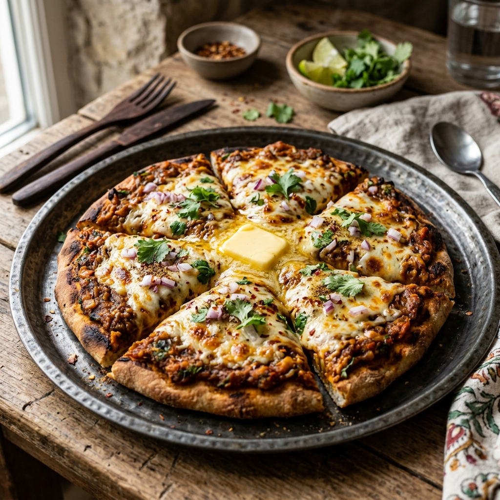

A street-food fusion sensation loading rich, spicy vegetable bhaji onto a crispy butter-toasted crust.

Tip: Tap items to check them off as you prep!
Follow steps sequentially. Mark completed steps to keep track.
To begin making the Pav Bhaji Pizza recipe, wash and boil the raw banana.
Add the raw bananas in a pressure cooker with required water.Cook for 2 to 3 whistles.
Let the pressure release naturally.
Once cooked, peel the skin and grate it.
Keep it aside.Heat some oil in a heavy bottomed pan.
Add cumin seeds and saute for about 10 seconds.Next, add onions and cook till they turn soft and translucent.
Add green chillies, capsicum, tomatoes and cook them for about 10 to 12 minutes or till the capsicum becomes soft.Next, add steamed peas, red chilli powder, turmeric powder, coriander powder, pav bhaji masala, salt as required and mix well.
Let it cook for about 2 minutes.Once done add the grated raw banana.
With the help of potato masher, mash the vegetables and cook for another 10 minutes.Once the vegetables are cooked turn of the heat and add lemon juice and allow the Pav Bhaji masala to cool.For the Pizza, take a pizza base and apply butter on it.
Toast the pizza base in the skillet until crisp and browned.Once the pizza based is crisped, evenly spread the prepared bhaji over the pizza.
Sprinkle the finely chopped onions and grated mozzarella cheese.Keep it in the preheated oven at 180�C for 12-15 minutes until the cheese melts and you see it bubbling.
Remove the Pav Bhaji Pizza from the oven and serve.Serve the�Pav Bhaji Pizza�along with a�Indian Style Masala Macaroni�for a weekend dinner.
You can also serve�No Churn Strawberry Ice cream�after your delicious meal.